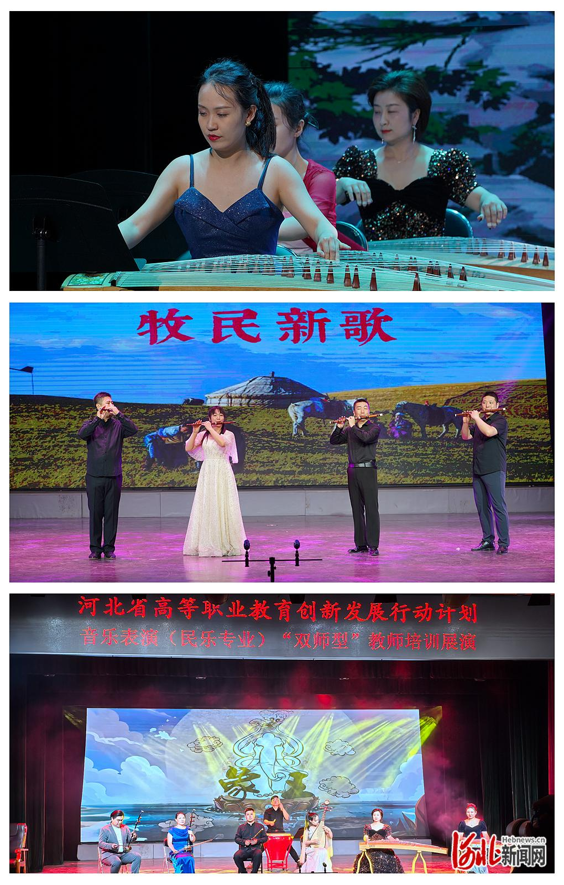

新闻链接：https://edu.hebnews.cn/2024-09/18/content_9235648.htm?timestamp=1726629291909
河北新闻网讯 近日，河北省高等职业教育创新发展行动计划项目音乐表演（民乐专业）“双师型”教师培训在河北艺术职业学院举行，来自省内25家中高等学校40余名民乐专业带头人、骨干教师参加培训并完成了全部课程。
开班仪式上，河北艺术职业学院党委书记蒋国新指出，希望通过培训增强教师理论教学能力和实践教学能力，提高教学科研与实践技能水平，培养既能站稳讲台、又能站稳舞台的“双师”，进一步提升河北省民乐专业教育教学质量。
培训以“理论讲座+曲目教学”“分组训练+舞台合奏”为授课模式，突出新职业教育教学理念，涵盖民乐发展理论、音乐科技融合、艺术专业技能、教学科研能力等模块，邀请长期扎根于民乐教学一线和艺术表演的教育家、艺术家进行授课。
获得“民族音乐终身成就奖”的中国音乐学院曹文工教授从宏观层面讲授《中国传统音乐的传承、弘扬与发展》并具体指导组合实践教学，
河北师范大学音乐学院客座教授、中国戏剧家协会会员胡小满围绕地域特色微观讲授《河北传统乐种的理论观照》，中央音乐学院王颖副教授讲授《民族器乐专业舞台表演中理论与实践相结合的创新发展》，安徽师范大学音乐学院李庆丰教授讲授《“大美育观”下的民族器乐教学与实践探索》，中国文联音乐艺术中心荣英涛讲授《书写音乐民族志——以京津冀学者音乐类非遗考察团田野工作为例》，各位专家将精湛的舞台艺术、深度的艺术思考浓缩成一堂堂教学与舞台相结合的精品课程。

结业仪式上，学员们精彩展示了舞台实践教学成果。《石上流泉》《牧民新歌》《故乡的原风景》《竹楼情歌》《赛马》《敦煌》《象王行》等曲目轮番演奏，余音绕梁。河北艺术职业学院院长冯彦瑞、副院长延凤宇观看了结业演出，对此次培训的良好效果及学员严谨认真的精神风貌给予肯定，鼓励大家回到工作岗位后将所学所得消化、内化、转化，应用到今后的教育教学中，更好地传承弘扬中华优秀传统文化。
学员纷纷表示，此次培训实用性、针对性、学术性和实践性都很强，通过培训拓展了专业视野，加深了对传承和发展民乐艺术更深刻的认识和思考，也促进了院校之间的交流、加深了情感，一定会将学习的收获和感悟运用到未来的教育教学实践中。